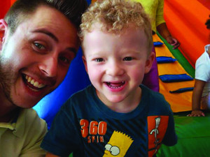

Contribuir para a Vida Profissional dos Alunos
A escolha da profissão envolve reflexões sobre talentos, sonhos, dinheiro e, no caso de boa parte dos estudantes de escolas públicas, oportunidades e superações. Para muitos alunos, a única opção é seguir os passos dos familiares ou aceitar empregos que não oferecem condições de crescimento pessoal e profissional.
Mas podemos mostrar que há caminhos para mudar essa realidade. No Dia do Trabalhador, a proposta é:
- Refletir sobre o sentido do trabalho;
- Ampliar a visão dos alunos sobre as possibilidades profissionais.
Atividade Proposta: feira das profissões
A ideia é organizar uma feira de troca e doação de livros na escola ou em um local público do entorno, como uma praça. Veja os passos a serem seguidos:
- Definir a data e o local junto com a escola e divulgar para toda a comunidade escolar;
- Mobilizar sua rede de contatos e a escola para arrecadar livros;
- Organizar o espaço com mesas, cadeiras, bancas, almofadas ou tapetes;
- Se possível, aproveitar a feira para promover rodas de leitura e de contação de histórias.
 O Douglas Stafoque, de Jarinu (SP), reuniu 235 alunos do Ensino Médio para falar sobre a importância da formação superior.